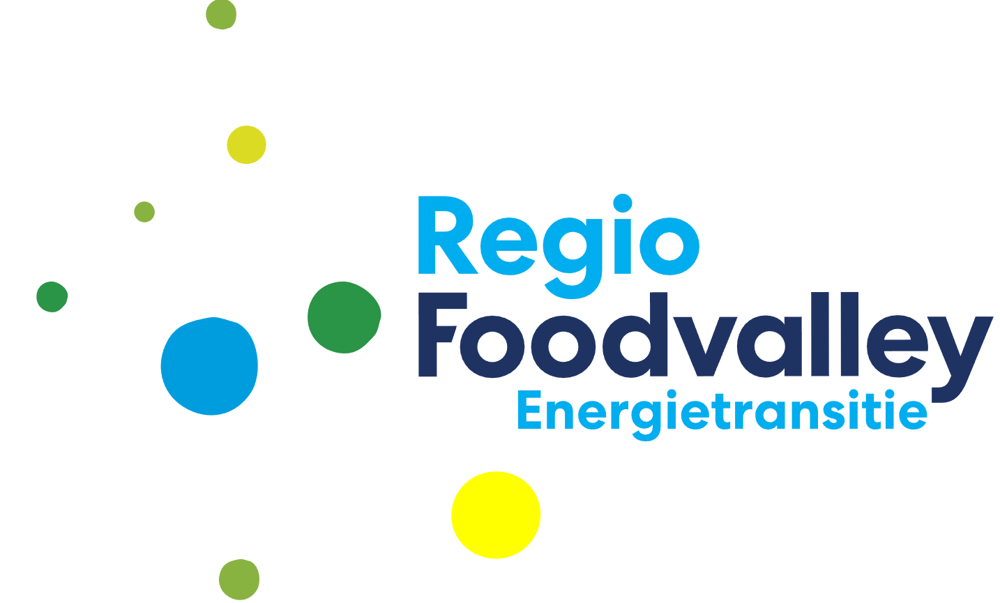

Binnen de provincie werken we met verschillende vormen van burgerparticipatie. Dit is een breed begrip waarmee vooral bedoeld wordt dat burgers betrokken worden bij besluitvorming. De politiek vraagt als het ware: hoe zouden jullie willen dat we dit aanpakken?
We werken aan het opzetten van een voor Gelderland nieuwe manier van burgerberaad, waarbij inwoners samenkomen en advies uitbrengen over een onderwerp. In dat proces late we ons inspireren door verschillende reeds bestaande vormen van burgerparticipatie:
|  |
De regio Foodvalley wil in 2050 energieneutraal zijn. Om dat te bereiken zoeken ze samen met acht gemeenten, twee provincies, waterschappen en belanghebbenden en inwoners naar kansen om energie op te wekken uit zon en wind. Dit heet de Regionale Energiestrategie (RES). In het voorjaar van 2021 is de eerste versie van de RES goedgekeurd |
||

|
Participatieve Waarde Evaluatie (PWE) is een nieuwe methode om beleidsopties te evalueren en de participatie van grote groepen burgers te faciliteren. De essentie van een PWE is dat burgers op een laagdrempelige manier een advies kunnen geven over een keuzevraagstuk van een overheid. Zij worden als het ware op de stoel van de bestuurder gezet. Bij de Nationale Klimaatraadpleging in 2021 is de PWE methode gebruikt |
||